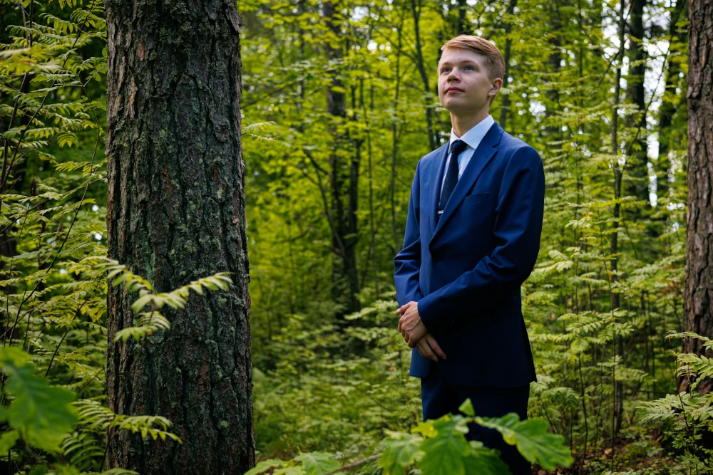

Pianisti
Atte Kohtala (s. 2007) on savonlinnalainen pianisti. Hän on harrastanut Savonlinnan musiikki- ja tanssiopistossa vauvasta asti monipuolisesti musiikkia erikoistuen pianoon vuodesta 2016 Anja Forsbergin oppilaana. Nuorten pianoakatemiaan hänet valittiin kesällä 2021 ja saman vuoden syksystä hänen opettajina ovat Niklas Pokki ja Savonlinnan musiikki- ja tanssiopiston Kalla Luhtasela.
Atte on osallistunut Paavali Jumppasen mestarikursseille Savonlinnan Musiikkiakatemiassa kuutena vuotena, ja on käynyt hänen kursseillaan Savonlinnan musiikki- ja tanssiopistossa myös keväisin 2017 alkaen. Peruskoulussa Atte oli musiikkipainotteisella luokalla, ja hän opiskelee nykyään musiikkilukiossa.
Palkintoja ja tunnustuksia
2025
- Piano Competition Città di San Donà di Piave – 1. palkinto
- Nordic Junior Piano Competition – erikoispalkinto parhaasta modernin teoksen tulkinnasta
- XIII Leevi Madetoja -pianokilpailu – finalistipalkinto
- Mikkelin XI pianokatselmus – tunnustuspalkinto
2024
- Kuopion X pianokilpailu – 1. palkinto
2023
- XXIV International Academic Music Competition Jūrmala 2023 for Piano – 2. sija
2022
- XII Leevi Madetoja -pianokilpailu – tunnustuspalkinto ja Suomen säveltäjät ry:n erikoispalkinto
- Mikkelin X pianokatselmus – tunnustuspalkinto
- Suomen Kulttuurirahasto – apuraha pianon hankintaan
2021
- Kuopion IX pianokilpailu – 3. palkinto ja erikoispalkinto sarjan parhaasta Bach-tulkinnasta
2018
- Mikkelin IX pianokatselmus – tunnustuspalkinto